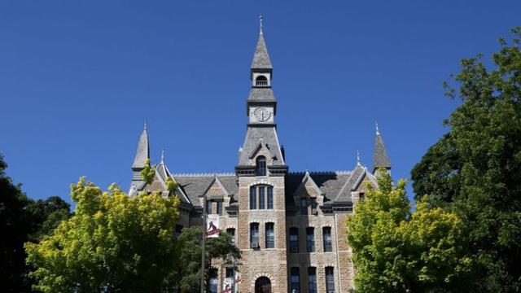

Mackay Hall, placed on the National Register of Historic Places, houses the University’s administrative offices, as well as classrooms. It was started in 1886 with the help of students who quarried the stone from the school’s land, carried it to the site and helped to build the structure as a means of earning their tuition. With its clock tower overlooking the residence halls, classrooms and other more modern facilities around it, Mackay Hall has become the symbol of the University.

Pledge Drive
Park University offers numerous degree programs online, and it maintains a long-standing relationship with the U.S. military for which it has been recognized as one of the largest providers of online undergraduate education to military learners worldwide. Since 2009, Park has received international recognition each year by Military Advanced Education magazine as one of its “Top Military-Friendly Colleges and Universities,” citing Park’s “innovative academic degree programs steeped in excellence.” In addition, in December 2012, Park was ranked No. 2 among all private colleges/universities in the country as “Best for Vets” by Military Times magazine.
↑ Back to Top